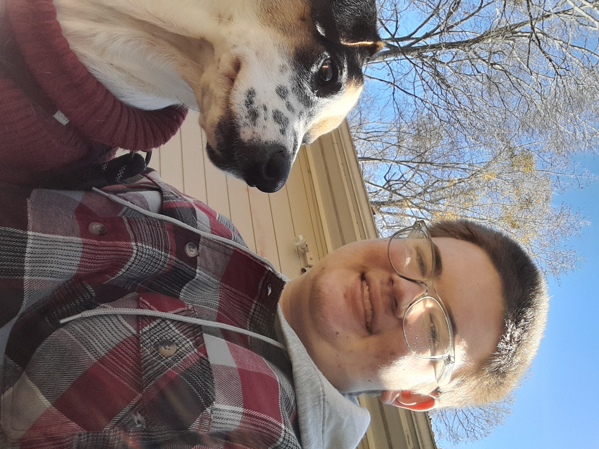

hello! welcome to my corner of the internet! i hope you will stay and have a look around!
Hello! My name is Andrew Spear, and I am a young author. I currently have several books in progress, and in my spare time enjoy gardening and crafts, playing video games, reading, and playing with our dog, Pana. I am currently in the process of learning more about the publishing industry, and how I can refine my books before publication.
here is a link to the blurbs on my books, as well as the art! if you would consider supporting my work, i would be greatfull!
If you have questions about Cybernet or my other books, I would love to hear from you!
(This will open your preferred email app)